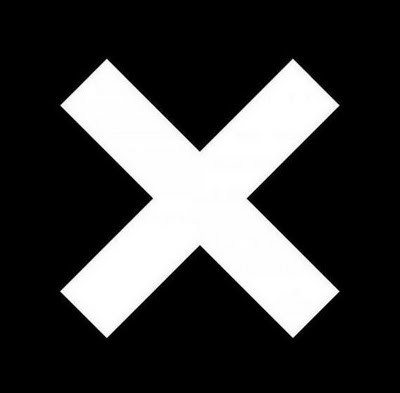
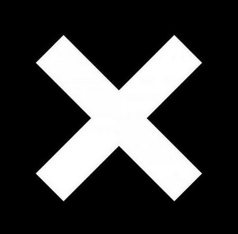
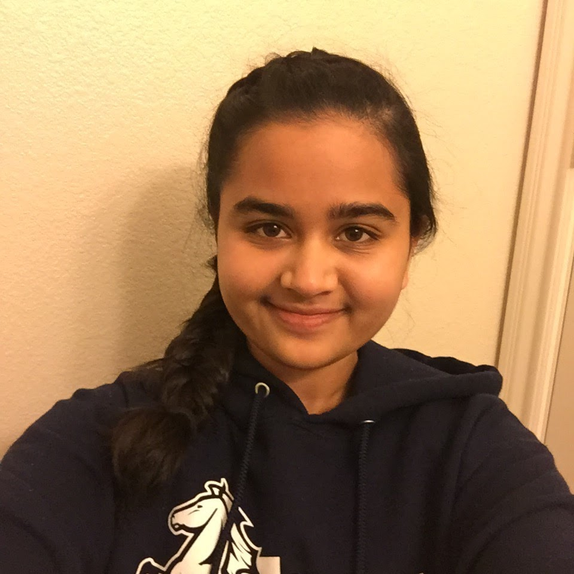

About Me

Yoga aspires to be a robotics engineer. Yoga always loved building robots by coding their software as well as building their hardware. She wants to eventually help other people by building robots. For example, something she would like to do someday is to be able to create machines that make a job for a doctor easier or create machines that make law enforcement better.
During eighth grade, she entered a robotics competition with a team which required her to build a robot that could potentially help people in real life. This competition was called Robo Rave. For this competition, Yoga and her team chose to make a robot that was able to detect five flames and put them out. For this robot, she had to use Arduino. An Arduino is a microcontroller that can be used by people to program robots. Her team won 2nd place overall in this competition. Through this experience, she learned how to lead a team, be open-minded to other ideas, and be adaptable. As well as robotics, she is also interested in computer science and coding. In fact, it is because of computer science that she got into robotics. She first got into coding in a coding club at her elementary school which eventually led her to start coding robots in robot competitions. This led her to enjoy designing and building the robots too.
She also entered a competition that required her and a partner to make a robot that could follow a line, go through a maze, and battle other robots using a remote control function. She had to use Python, a programming language, to code this robot. Her team won third place in this competition. One of the clubs that she participates in, in high school, is the Gael Force Robotics. She is on team 5327D. Being on this team helped her gain more knowledge about robotics. It made her become more creative because it challenged her to solve problems and think in a different perspective. She learned how to be more persistent because in this club she realized that you will have to rebuild the robot many times in order to make it its best. Through this club, she became more cooperative by listening to her teammates and considering their ideas which also made her more open-minded. Another club that she participates in, in high school is a club called, She's The First. This club raises money for girls' education in third world countries. This club helped her realize that there are a lot of people in this world who do not have the opportunities to reach their potential due to financial reasons. This club is where she is able to learn how to communicate and persuade people to donate to education in third world countries. She is learning these skills through various fundraisers open to the public. Yoga is an eager and engaged learner. She finds science and engineering fascinating and wishes to use these subjects in her career. As a freshman, she is taking Spanish 2, Biology with Research, Computer Science Engineering, Algebra 2/Trigonometry, and Advanced English 9. In her freetime, she also does dance, plays the flute, and does photography
Overall, she has learned a lot of skills that got her to where she is today. Thank you for taking the time to learn about her. You can contact her through email at yogapriyak7@gmail.com. To see more of her achievements and goals keep exploring her website.